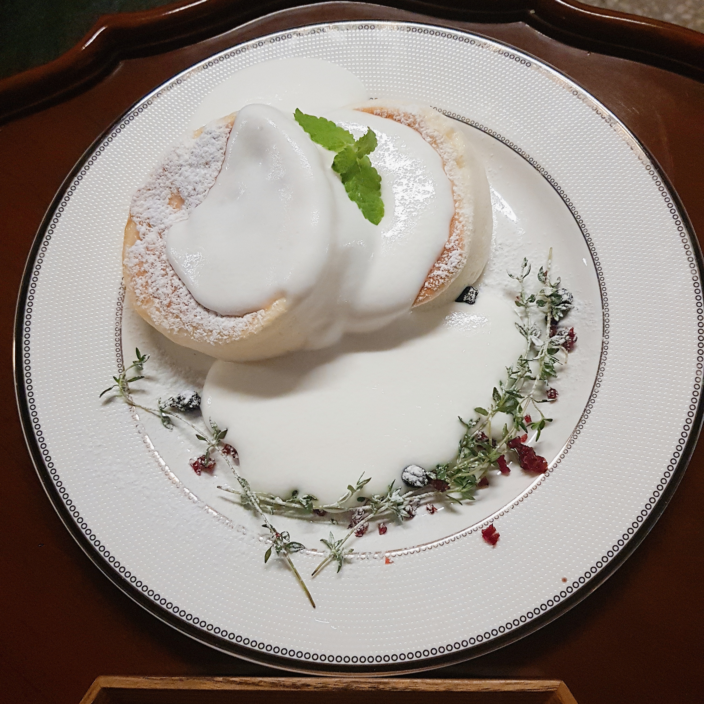
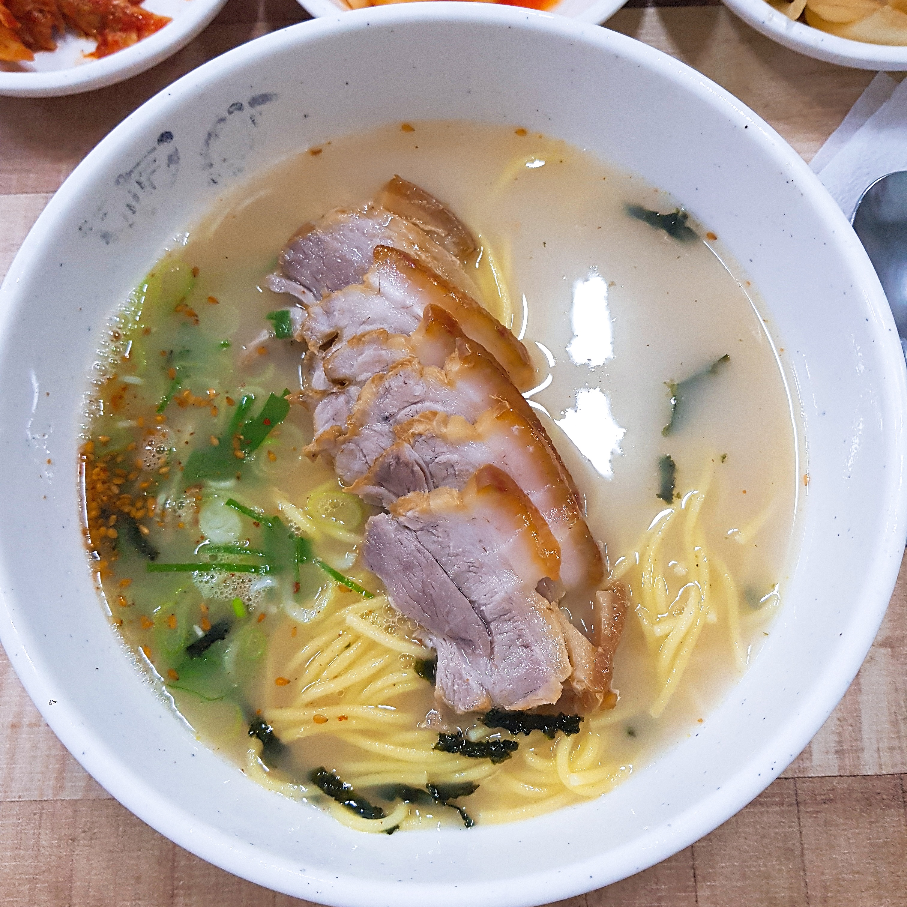
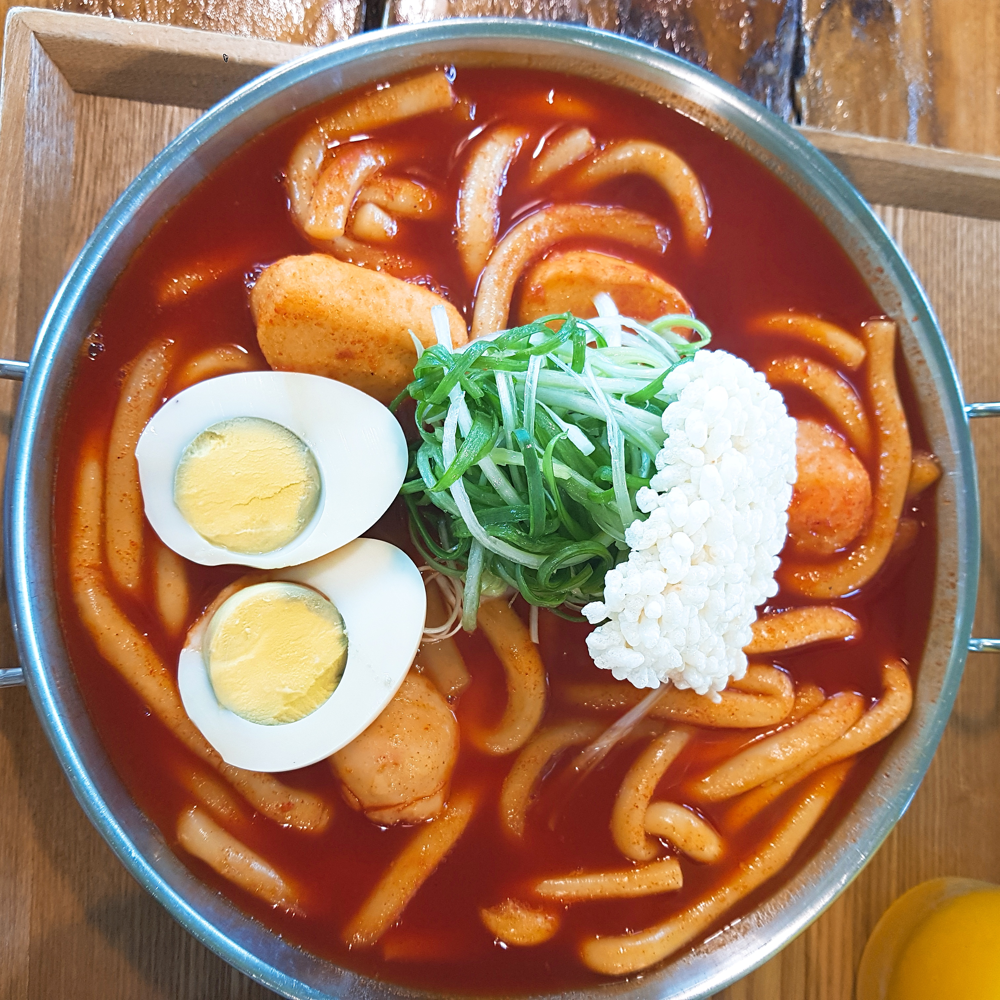

수플레 팬케이크가 유명한 곳이 있다고 하여 방학 중 직접 서울에 올라가 먹으러 갔다.
지도를 보고 찾아 만옥당에 들어섰을 때 빈자리가 거의 없었다.
다행히 운 좋게 자리가 하나 비어 있어 얼른 자리를 잡고 주문했다.
만옥당 주소 : 서울 송파구 백제고분로45길 9 2층

제주도하면 떠오르는 음식으로 고기국수가 있다.
고기국수로 유명해 관광객들이 줄서서 먹는 고기국수집이 몇 군데 있다.
자매국수, 올래국수 등이 가장 유명한 고기 국수집이다.
제주도 여행 때에는 줄이 너무 길어 포기했으나 지금은 마음만 먹으면 언제든 갈 수 있어 한번 가보았다.
자매국수 노형점 주소 : 제주특별자치도 제주시 월랑로4길 6

지붕위 제주바다는 고등학교 졸업 후 친구들과 온 제주도 여행 때 갔던 곳이다.
한적한 분위기에 언제 먹어도 맛있는 떡볶이를 좋아하는 사람들과 즐겼던 기억이 너무 좋아서 또 방문했다.
예전 같은 분위기나 느낌이 나지 않아 많이 아쉬웠던 기억이 난다.
지붕위 제주바다 주소 : 제주특별자치도 제주시 구좌읍 평대2길 17